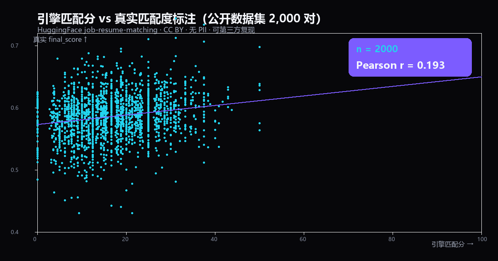

data stays in your browser · refresh to clear
最划算的补强
实习方向推荐
目标：AI 产品 · 先看目标契合，再看匹配分批量岗位 · 全行业适配
粘贴一批 JD，立刻知道该投哪些；或看你的经历适配哪些行业你的经历（简历）
多个岗位 JD（每个之间用单独一行的 --- 分隔）
排序用「匹配分」给岗位打分并附最划算补强；全行业适配用你经历里的关键词覆盖 65 个岗位族的能力项。
该投哪些（按匹配分排序）
你的经历适配哪些行业
验证闭环 · 证据墙
匹配分不是玄学：公开数据可复现，失效区间也公开
投递即算分
按 JD × 你的经历算出预测匹配分，写进本地库。
真实结果回流
已读 / 沟通 / 面试 / offer 如实记录，只有 HR 真动起来才算正反馈。
Pearson r 打脸
样本到量后检验预测分准不准：准就信，不准就反过来改权重。
公开数据来自 HuggingFace nonameee12233/job-resume-matching（CC BY，无 PII）。复现：python scripts/real_eval_family.py · python scripts/real_eval_calibrate.py。作者私有测试只公开聚合统计，不含任何个人信息。
中文 vs 英文：同一个引擎，两种真实数据
career-loop 的词表是中文为主——只用英文数据检验，等于没测 两个数据集都是公开、可自行下载复现为什么英文数字更高
英文公开集只有 5 个大类别，类间边界清晰，判错就直接错； 它的 SALES 一个类就覆盖了中文市场的销售 / BD / 电商运营 / 外贸好几类。
为什么中文场景本身更难
中文招聘市场有 300+ 细分行业，同一个岗位天然跨族 （"投资经理"既属证券也属财务），标签本身更模糊； 而且客服 / 助理 / 项目专员这类 JD 描述大半是福利模板，信息量不足。
python scripts/fetch_real_eval_data.py & python scripts/real_eval_family.py → 93.6%
python scripts/fetch_cn_eval_data.py & python scripts/cn_eval_family.py → 77.8%
两个数据集均不入库（data/real_eval、data/cn_eval 已在 .gitignore）
中文抽取实验室
亲手喂一段中文 JD，看引擎到底认出了什么、漏了什么上面 77.8% 是个汇总数字。这里把它拆开：左边的黄色块是引擎没认出来的要求—— 它们要么该补进词表，要么本来就该靠语义模型理解。敢把漏的摆出来，才算真的在检验自己。
粘贴一段中文 JD
或者直接看真实样本
✓ 词表已覆盖的能力项
⚠ 词表未覆盖（引擎漏掉的）
真实回流报告长什么样
50 条真实中文 JD + 真实回流结果跑出来的报告（已脱敏）上面所有数字都是汇总。这一块是完整报告：拿一份投递记录表， 一条命令跑完「算预测分 → 校准 r → 漏斗归因 → 方向对比」， 出来就是这样一份 markdown。公司名已替换成代号、回流备注压成归因标签，不含任何可定位到具体投递的信息。
分桶 offer 率 匹配分越高，反而越低
r ≈ 0 的时候，先看分布 别急着怪引擎
r 低有两种成因：① 引擎该给高分的没给（要修引擎）； ② 结果与岗位契合度无关（只能认这个数据）。看分布重叠不重叠才能分清。
完整报告（含逐条明细表、方向对比、边界声明）：docs/reflow_sample.md
自己也跑一遍：career-loop reflow --records <你的投递记录> --profile <你的经历> --mode terminal
数据定位：样例 / 验证数据（D001–D040 与 D041–D090 同源同格式、时间连续），
用于展示流水线在真实中文 JD 上的行为，不作为作者真实求职记录对外宣称。
用你自己的结果校准
这才是「可证伪」的真正含义——不是相信，是检验每投一家，把匹配分和真实结果如实记下来。样本够了，这里会直接算出 Pearson r 和分桶正反馈率——你的匹配分到底准不准，数据说了算。全部存在浏览器 localStorage，不上传、不联网。